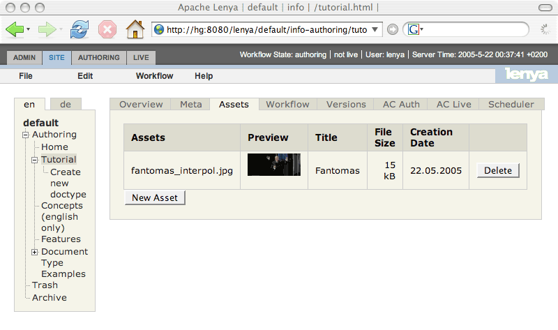
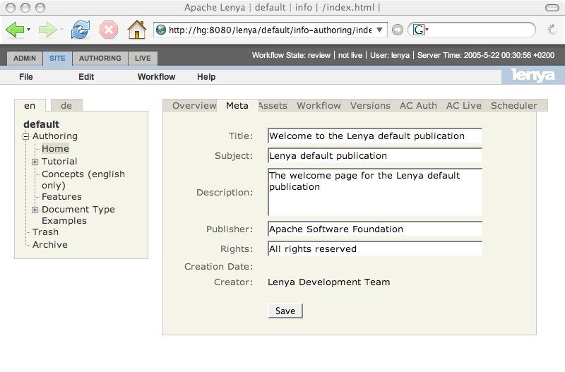
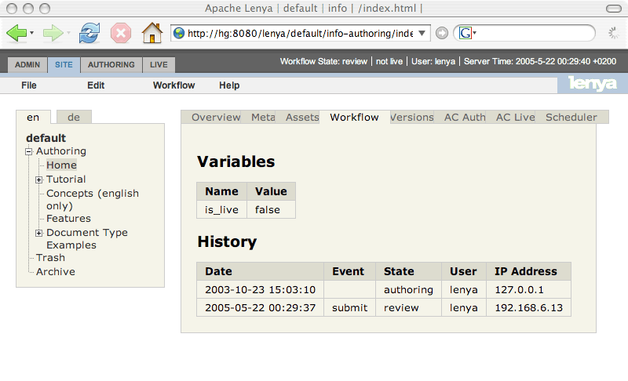
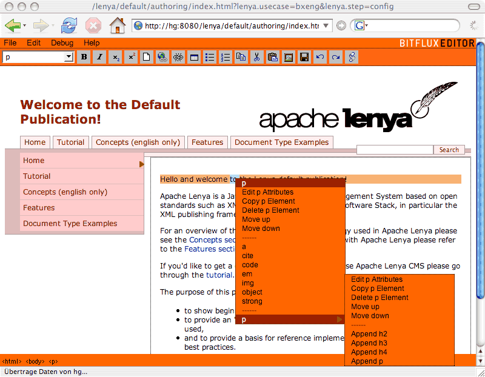
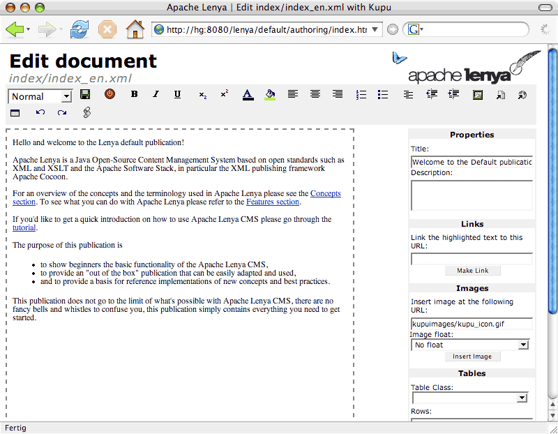
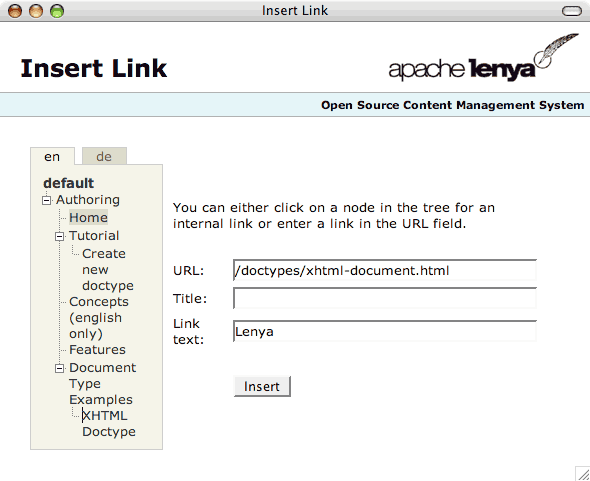

Apache Lenya Screenshots
The following screenshots are meant for the evaluator in a hurry. For a much more complete impression , download the latest release and try it out yourself. You may also want to try out the online demo.
Site management
The Apache Lenya site area is used to perform operations that concern multiple pages, like moving pages
around, renaming sections of the site, etc. The site area gives a quick overview of the complete site.
Detailed information about each page can be accessed by clicking on the relevant node in the tree
structure at left. In this view, the asset management is shown.

This is the metadata tab of the site area.

This is the workflow tab of the site area.

WYSIWYG editing
Apache Lenya comes with different editors for content editing. One of the more advanced ones is BXE.
Using BXE, you can edit arbitrary XML in WYSIWYG and validate your document against an Relax NG
schema while it is being edited.
BXE uses validation to restrict the editing choices instead of allowing free-form input and then
generating validation errors on save (an approach that makes it different from most other editors).

Another editor shipping with Apache Lenya is Kupu. Kupu is specialized for XHTML editing and works in Internet Explorer and Mozilla.

Both editors are tightly integrated, and can of course access assets and links managed by Apache Lenya, as the following insert link popup shows.
